Tsuzuki design reference
2026-11-03 · 16 pages · 139 artboards · 99 individual Dot screens · 2× PNG.
These images work offline. Archive pages are reference only. Text index
01-brand
02-motion
03-home
04-browse
05-novel
06-reader
07-system
08-tools
09-manga
10-anime
11-tablet
12-portrait
13-desktop
14-components
15-archive-round2
16-archive-round1
02-motion
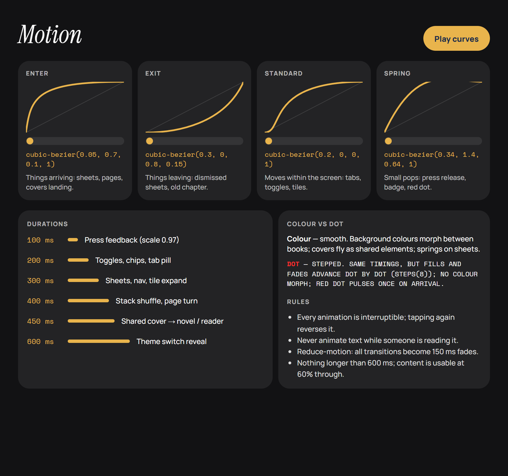
MotionSpecMotion spec — timing, easing, rules · 900×844 design px 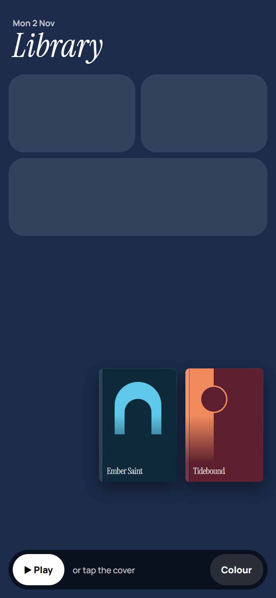
MotionOpen1 · Cover → novel (shared element) · 390×844 design px 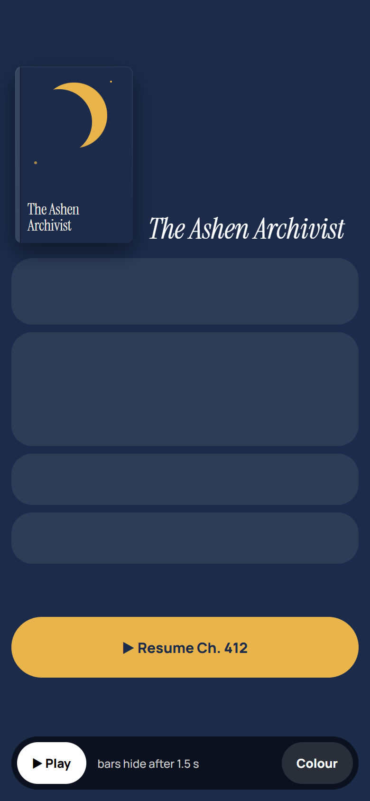
MotionReader2 · Resume → reader (expand from button) · 390×844 design px 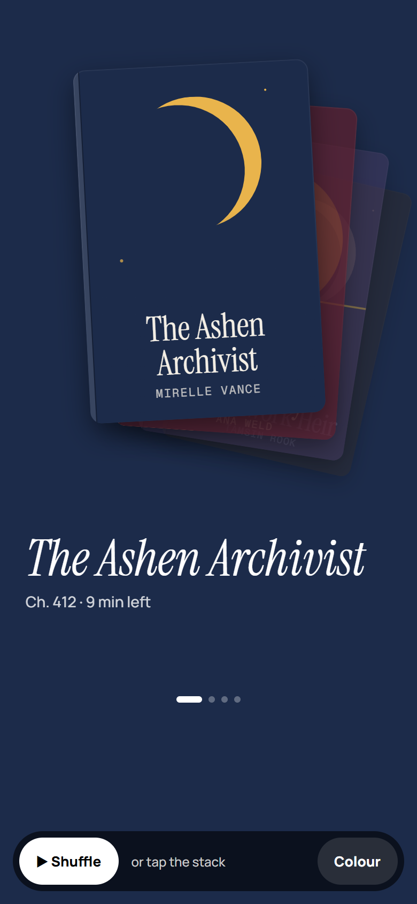
MotionStack3 · Stack shuffle + colour morph · 390×844 design px 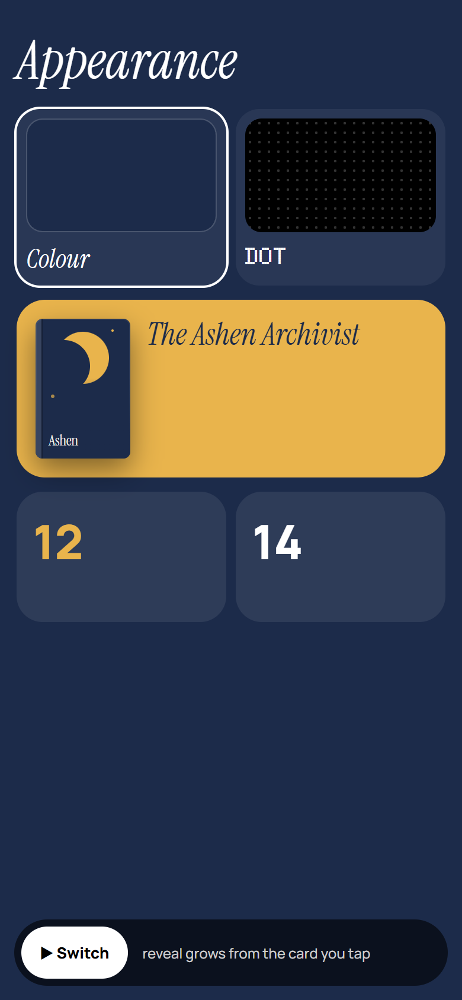
MotionTheme4 · Theme switch (reveal from tap) · 390×844 design px 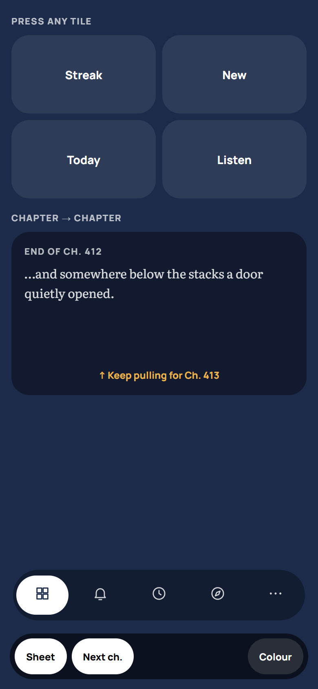
MotionSheet5 · Sheets, press, nav, chapter swipe · 390×844 design px 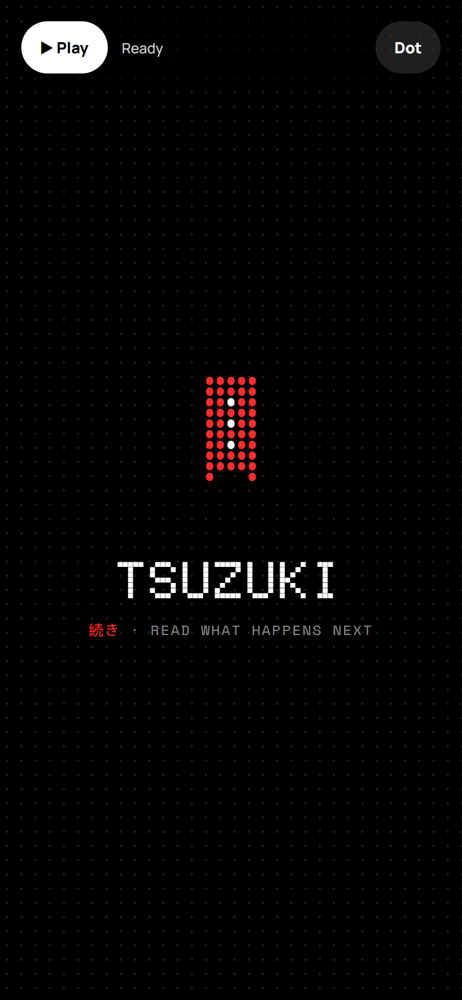
MotionSplash6 · Startup — ribbon prints, dots load, drops into Home · 390×844 design px
03-home
Individual Dot screens 04-browse
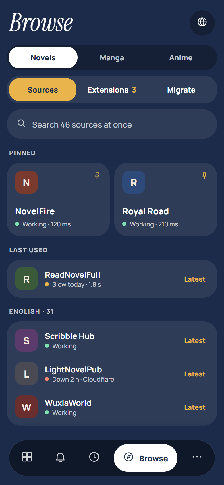
BrowseBrowse – sources · 390×844 design px 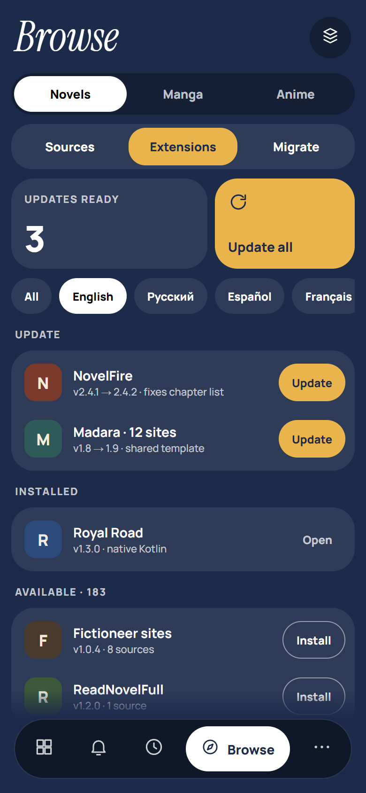
ExtensionsBrowse – extensions · 390×844 design px 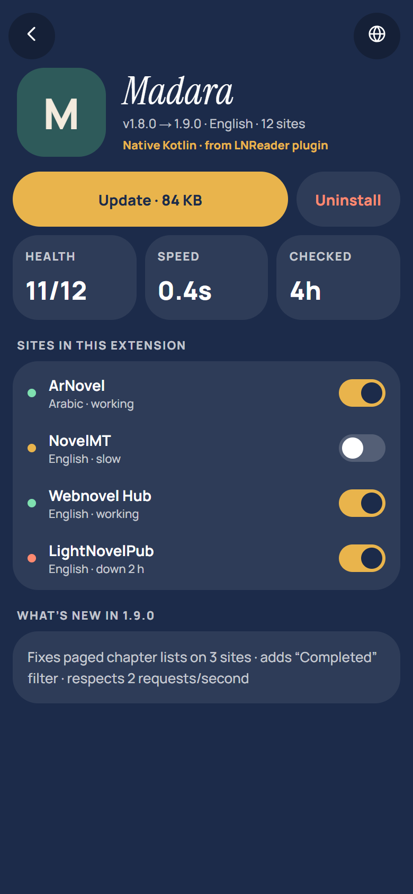
ExtensionDetailExtension details · 390×844 design px 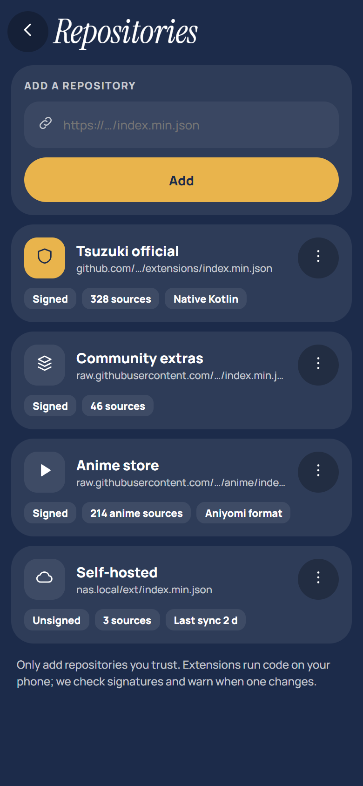
ExtensionReposExtension repositories · 390×844 design px 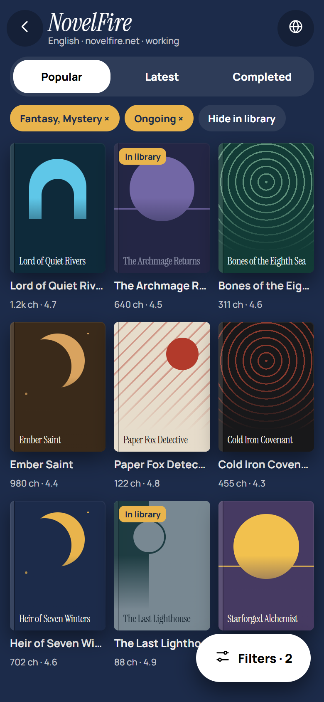
CatalogueSource catalogue · 390×844 design px 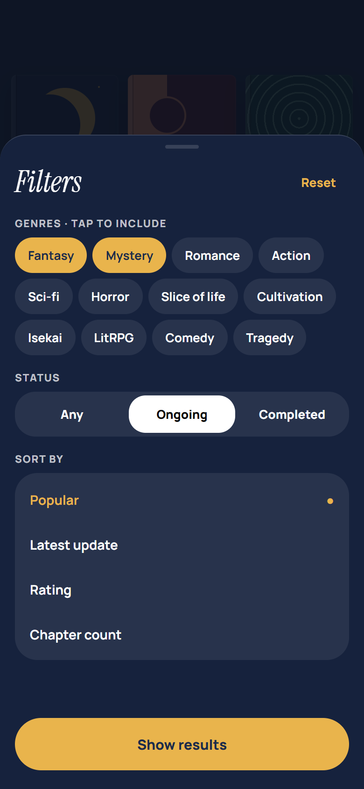
CatalogueFiltersSource filters sheet · 390×844 design px 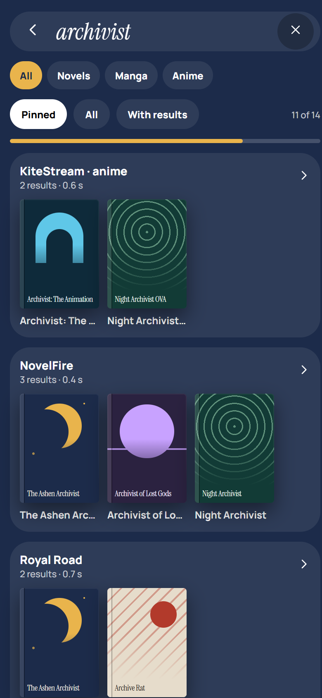
GlobalSearchGlobal search · 390×844 design px 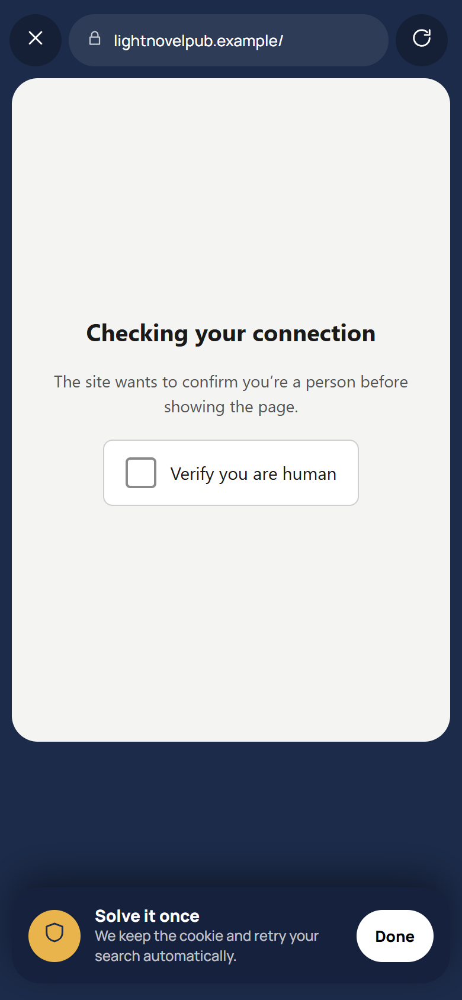
WebViewWebView – Cloudflare check · 390×844 design px 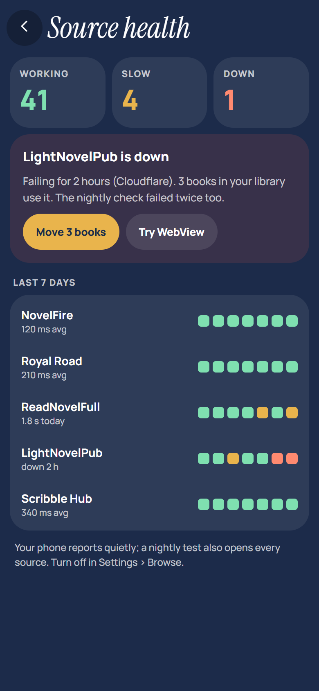
SourceHealthSource health · 390×844 design px 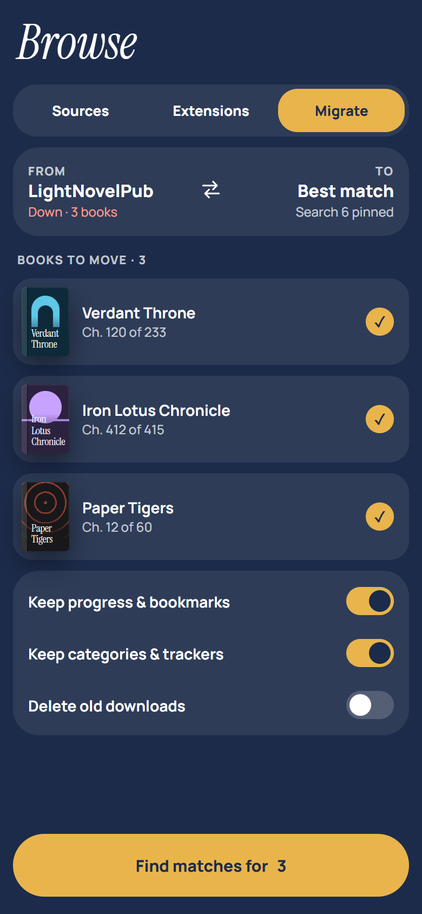
MigrationMigrate – choose novels · 390×844 design px 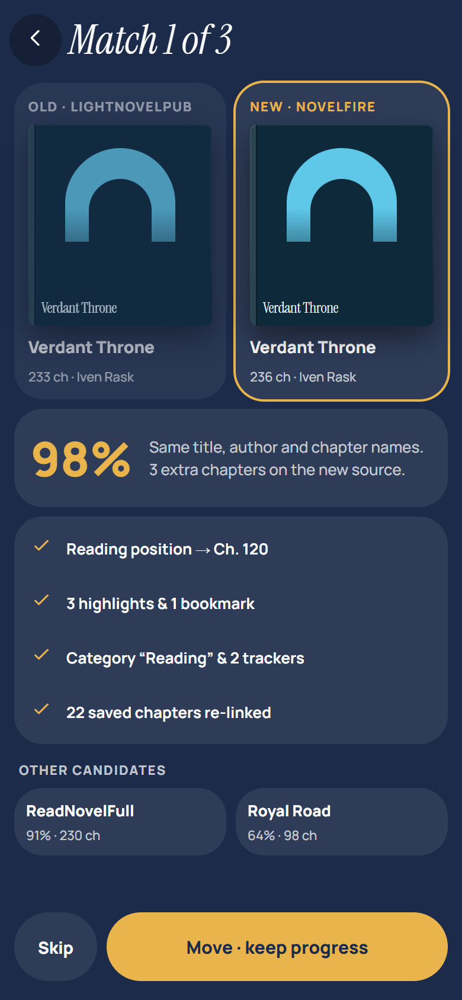
MigrationCompareMigrate – compare match · 390×844 design px 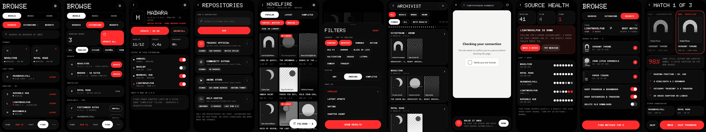
DotBrowseDOT THEME — the same 11 screens · 4490×844 design px
Individual Dot screens 05-novel
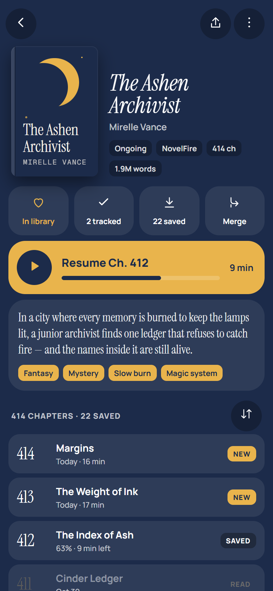
NovelDetailsNovel details · 390×844 design px 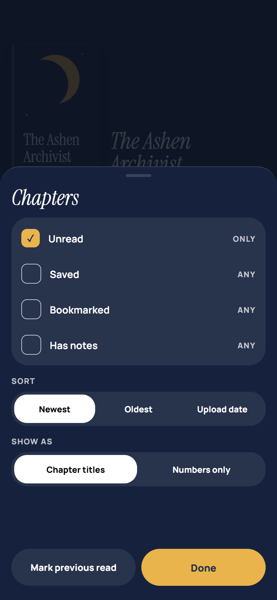
ChapterFilterChapters – filter & sort sheet · 390×844 design px DownloadSheetDownload chapters sheet · 390×844 design px AddCategoryAdd to library – category dialog · 390×844 design px EditNovelEdit novel info · 390×844 design px TrackingTracking sheet · 390×844 design px TrackerSearchTracker – match search · 390×844 design px MergeSourcesMerge sources · 390×844 design px DuplicateDuplicate found dialog · 390×844 design px DotNovelDOT THEME — the same 9 screens · 3670×844 design px
Individual Dot screens
NovelDetailsDot · NovelDetails · 390×844 design px ChapterFilterDot · ChapterFilter · 390×844 design px DownloadSheetDot · DownloadSheet · 390×844 design px AddCategoryDot · AddCategory · 390×844 design px EditNovelDot · EditNovel · 390×844 design px TrackingDot · Tracking · 390×844 design px TrackerSearchDot · TrackerSearch · 390×844 design px MergeSourcesDot · MergeSources · 390×844 design px DuplicateDot · Duplicate · 390×844 design px 06-reader
ReaderReader – controls · 390×844 design px ReaderImmersiveReader – immersive + text selection · 390×844 design px ReaderPagedReader – paged · 390×844 design px ReaderSettingsReader – appearance sheet (3 tabs) · 390×844 design px ReaderTOCReader – contents drawer · 390×844 design px ReaderFindReader – find in chapter · 390×844 design px ChapterEndChapter transition + recap · 390×844 design px DictionaryDictionary lookup sheet · 390×844 design px TranslateTranslation – bilingual mode · 390×844 design px TTSListen – full player · 390×844 design px ListenMiniListen – in-reader mini player + sleep timer · 390×844 design px NotesNotebook – highlights & glossary · 390×844 design px ReplaceRulesText replacement rules · 390×844 design px DotReaderDOT THEME — the same 13 screens · 5310×844 design px
Individual Dot screens
ReaderDot · Reader · 390×844 design px ReaderImmersiveDot · ReaderImmersive · 390×844 design px ReaderPagedDot · ReaderPaged · 390×844 design px ReaderSettingsDot · ReaderSettings · 390×844 design px ReaderTOCDot · ReaderTOC · 390×844 design px ReaderFindDot · ReaderFind · 390×844 design px ChapterEndDot · ChapterEnd · 390×844 design px DictionaryDot · Dictionary · 390×844 design px TranslateDot · Translate · 390×844 design px TTSDot · TTS · 390×844 design px ListenMiniDot · ListenMini · 390×844 design px NotesDot · Notes · 390×844 design px ReplaceRulesDot · ReplaceRules · 390×844 design px 07-system
DownloadsDownload queue · 390×844 design px StatsStats & goals · 390×844 design px CategoriesManage categories · 390×844 design px SettingsSettings – theme picker lives here · 390×844 design px SettingsReaderSettings – reader · 390×844 design px SettingsAppearanceSettings – appearance · 390×844 design px BackupBackup & sync · 390×844 design px AppLockApp lock · 390×844 design px AboutAbout & credits · 390×844 design px OnboardingOnboarding (4 steps) · 390×844 design px WidgetsWidgets & notifications · 390×844 design px DotSystemDOT THEME — the same 11 screens · 4490×844 design px
Individual Dot screens
DownloadsDot · Downloads · 390×844 design px StatsDot · Stats · 390×844 design px CategoriesDot · Categories · 390×844 design px SettingsDot · Settings · 390×844 design px SettingsReaderDot · SettingsReader · 390×844 design px SettingsAppearanceDot · SettingsAppearance · 390×844 design px BackupDot · Backup · 390×844 design px AppLockDot · AppLock · 390×844 design px AboutDot · About · 390×844 design px OnboardingDot · Onboarding · 390×844 design px WidgetsDot · Widgets · 390×844 design px 09-manga
OnboardingContentOnboarding – what do you read? · 390×844 design px LibraryMixedLibrary – novels, manga, manhwa · 390×844 design px BrowseMangaBrowse – manga sources & repos · 390×844 design px MangaDetailsManhwa details – scanlators, auto webtoon · 390×844 design px MangaPagedManga reader – paged, right to left · 390×844 design px MangaReaderManhwa reader – webtoon strip · 390×844 design px MangaReaderSettingsManga reader settings sheet · 390×844 design px TabletMangaSpreadTablet – two-page manga spread · 1280×800 design px DotMangaDOT THEME — the same 8 screens · 2850×1664 design px
Individual Dot screens
OnboardingContentDot · OnboardingContent · 390×844 design px LibraryMixedDot · LibraryMixed · 390×844 design px BrowseMangaDot · BrowseManga · 390×844 design px MangaDetailsDot · MangaDetails · 390×844 design px MangaPagedDot · MangaPaged · 390×844 design px MangaReaderDot · MangaReader · 390×844 design px MangaReaderSettingsDot · MangaReaderSettings · 390×844 design px TabletMangaSpreadDot · TabletMangaSpread · 1280×800 design px 10-anime
AnimeHomeHome – Read / Watch, continue watching, airing this week · 390×844 design px AnimeLibraryLibrary – novels / manga / anime · 390×844 design px AnimeDetailsAnime details – seasons, episodes, fillers, groups · 390×844 design px BrowseAnimeBrowse – anime sources, torrents, extension stores · 390×844 design px PlayerSettingsSettings – player (mpv, AniSkip, decoder, torrent) · 390×844 design px PlayerPlayer – controls, AniSkip, gestures, lock · 844×390 design px PlayerSheetsPlayer – subtitles, audio, quality, speed, episodes, video · 844×390 design px AnimeTrackingTracking – episodes on AniList, MAL, Simkl… · 390×844 design px DotAnimeDOT THEME — the same anime screens · 2894×844 design px
Individual Dot screens
AnimeHomeDot · AnimeHome · 390×844 design px AnimeLibraryDot · AnimeLibrary · 390×844 design px AnimeDetailsDot · AnimeDetails · 390×844 design px BrowseAnimeDot · BrowseAnime · 390×844 design px PlayerSettingsDot · PlayerSettings · 390×844 design px PlayerDot · Player · 844×390 design px PlayerSheetsDot · PlayerSheets · 844×390 design px 11-tablet
TabletLibraryTablet – home + details pane · 1280×800 design px TabletBrowseBrowse – sources + catalogue · 1280×800 design px TabletReaderReader – two-page spread · 1280×800 design px TabletTTSListen – text + player · 1280×800 design px TabletUpdatesUpdates – list + chapter preview · 1280×800 design px TabletNovelNovel – two-column details · 1280×800 design px TabletReaderPanelReader – scroll + notes side panel · 1280×800 design px TabletSettingsSettings – list + detail · 1280×800 design px DotTabletDOT THEME — the same 8 tablet screens · 2600×3320 design px
Individual Dot screens
TabletLibraryDot · TabletLibrary · 1280×800 design px TabletUpdatesDot · TabletUpdates · 1280×800 design px TabletBrowseDot · TabletBrowse · 1280×800 design px TabletNovelDot · TabletNovel · 1280×800 design px TabletReaderDot · TabletReader · 1280×800 design px TabletReaderPanelDot · TabletReaderPanel · 1280×800 design px TabletTTSDot · TabletTTS · 1280×800 design px TabletSettingsDot · TabletSettings · 1280×800 design px 12-portrait
TabletPortraitLibraryTablet portrait – library · 800×1280 design px TabletPortraitReaderTablet portrait – reader · 800×1280 design px FoldableFoldable unfolded – details | reader across the hinge · 1100×820 design px DotPortraitDOT THEME — portrait & foldable · 2780×1280 design px
Individual Dot screens
TabletPortraitLibraryDot · TabletPortraitLibrary · 800×820 design px TabletPortraitReaderDot · TabletPortraitReader · 800×820 design px FoldableDot · Foldable · 1100×820 design px 13-desktop
DesktopLibraryDesktop – library · 1440×900 design px DesktopDesktop – browse, three panes · 1440×900 design px DesktopReaderDesktop – reader with contents · 1440×900 design px DotDesktopDOT THEME — desktop · 4400×900 design px
Individual Dot screens
DesktopLibraryDot · DesktopLibrary · 1440×900 design px DesktopDot · Desktop · 1440×900 design px DesktopReaderDot · DesktopReader · 1440×900 design px 14-components
CoverCover (generated art) · 160×240 design px NavNav (Colour / Dot) · 390×96 design px BarProgress bar (solid / dots) · 300×40 design px RailRail (tablet nav) · 96×800 design px IconIcon · 40×40 design px LogoLogo (theme, size, shape, mono) · 192×192 design px
15-archive-round2
01-1-stack-bento-tiles-take-the-book-s-colour1 · Stack + Bento — tiles take the book’s colour · 390×844 design px 02-2-dot-stack-covers-are-the-only-colour2 · Dot + Stack — covers are the only colour · 390×844 design px 03-3-dot-bento-monochrome-widgets3 · Dot + Bento — monochrome widgets · 390×844 design px 04-4-thumb-zone-everything-you-touch-is-in-the-bottom-half4 · Thumb zone — everything you touch is in the bottom half · 390×844 design px 05-5-bento-you-arrange-edit-mode5 · Bento you arrange — edit mode · 390×844 design px 06-6-one-card-gestures-swipe-to-switch-up-to-read6 · One card, gestures — swipe to switch, up to read · 390×844 design px
16-archive-round1
01-a-shelf-physical-spines-you-pull-outA · Shelf — physical spines you pull out · 390×844 design px 02-b-stack-books-as-a-deck-like-a-music-playerB · Stack — books as a deck, like a music player · 390×844 design px 03-c-index-no-covers-pure-typography-on-paperC · Index — no covers, pure typography on paper · 390×844 design px 04-d-expressive-material-3-expressive-shapes-colorD · Expressive — Material 3 Expressive shapes & color · 390×844 design px 05-e-bento-your-reading-life-as-tilesE · Bento — your reading life as tiles · 390×844 design px 06-f-dot-monochrome-dot-matrixF · Dot — monochrome dot-matrix · 390×844 design px 07-g-ink-manga-panels-screentoneG · Ink — manga panels & screentone · 390×844 design px 08-h-brutal-thick-lines-hard-shadows-loud-colorH · Brutal — thick lines, hard shadows, loud color · 390×844 design px